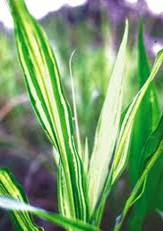
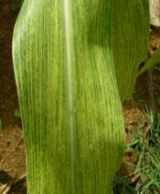
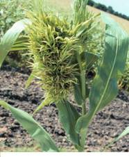

| Home |
| MAIZE |
mAJOR DISEASES |
| 1. Downy Mildew |
| 2. Sorghum downy mildew |
| 3. Phlippine downy mildew |
| 4. Crazy top |
| 5. Leaf blight |
| 6. Rust |
| 7. Head smut |
| 8. Charcoal rot |
mAJOR DISEASES |
| 1. Bacterial Stalk rot |
| 2. Mosaic |
| 3. Brown spot |
| Questions |
| Download Notes |
MAIZE :: MAJOR DISEASES :: DOWNY MILDEW
Symptoms
The most characteristic symptom is the development of chlorotic streaks on the leaves. Plants exhibit a stunted and bushy appearance due to shortening of the internodes. White downy growth is seen on the lower surface of leaf. Downy growth also occurs on bracts of green unopened male flowers in the tassel. Small to large leaves are noticed in the tassel. Proliferation of auxillary buds on the stalk of tassel and the cobs is common (Crazy top).
{kind=link}
|  |  |  |
Symptoms |
||
Pathogen
The fungus grows as white downy growth on both surface of the leaves, consisting of sporangiophores and sporangia. Sporangiophores are quite short and stout, branch profusely into series of pointed sterigmata which bear hyaline, oblong or ovoid sporangia (conidia). Sporangia germinate directly and infect the plants. In advanced stages, oospores are formed which are spherical, thick walled and deep brown.
Favourable Conditions
- Low temperature (21-33˚C)
- High relative humidity (90 per cent) and drizzling.
- Young plants are highly susceptible.
Disease cycle
The primary source of infection is through oospores in soil and also dormant mycelium present in the infected maize seeds. Secondary spread is through airborne conidia. Depending on the pathogen species, the initial source of disease inoculum can be oospores that over winter in the soil or conidia produced in infected, over wintering crop debris and infected neighboring plants. Some species that cause downy mildew can also be seed borne, although this is largely restricted to seed that is fresh and has high moisture content.
At the onset of the growing season, at soil temperatures above 20°C, oospores in the soil germinate in response to root exudates from susceptible maize seedlings. The germ tube infects the underground sections of maize plants leading to characteristic symptoms of systemic infection including extensive chlorosis and stunted growth. If the pathogen is seed borne, whole plants show symptoms. Oospores are reported to survive in nature for up to 10 years.
Once the fungus has colonised host tissue, sporangiophores (conidiophores) emerge from stomata and produce sporangia (conidia) which are wind and rain splash disseminated and initiate secondary infections. Sporangia are always produced in the night. They are fragile and can not be disseminated more than a few hundred meters and do not remain viable for more than a few hours.
Germination of sporangia is dependent on the availability of free water on the leaf surface. Initial symptoms of disease (chlorotic specks and streaks that elongate parallel to veins) occur in 3 days. Conidia are produced profusely during the growing season. As the crop approaches senescence, oospores are produced in large numbers.
Management
- Deep ploughing.
- Crop rotation with pulses.
- Rogue out infected plants.
- Treat the seeds with metalaxyl at 6g/kg.
- Spray the crop with Metalaxyl + Mancozeb @ 1kg on 20th day after sowing.
- Grow resistant varieties and hybrids viz. CO1, COH1and COH2.